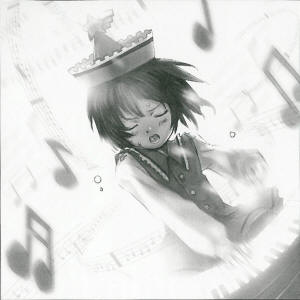

|
Season 115, 4th of the Planting Month (May)
In Search of a New Sound I said I needed to write an article about the noisy family of the Prismriver Sisters, but I only recently met with the youngest sister, Lyrica Prismriver (Poltergeist) who plays mysterious notes, after sending repeated requests. From the start I had an unwaning interest in how she makes these strange notes so freely yet aren't supposed to exist. Today my doubts were answered as I went to verify them through a forceful interview. For the uninitiated, the Prismriver Sisters are comprised of the oldest sister, Lunasa Prismriver who plays violin, middle sister, Merlin Prismriver who likes the trumpet, and the youngest sister Lyrica Prismriver who uses the keyboard. They hold live concerts in many places in Gensokyo. But the youngest sister, Lyrica, whose keyboard-shaped instrument plays unimaginable notes. Illusionary notes that cannot be found in nature. The sound quality is very high, and it can play many notes at the distinct intervals. In fact these many faultless notes are its speciality. Nearly everyone who listens to it cannot hear anything else. "This keyboard itself is like an illusion. Perhaps it could be said to be the yuurei of an instrument that plays notes that have been lost in the outside world. I don't really understand how it makes the notes, but as long it can play them, there's no problem. For notes as well as instruments, for them to be lost and become illusion, if they are lost in the this world, they become yuurei. My notes are the notes of illusions, the notes of the other world. It makes perfect sense for everyone to want to listen to them in this world, yeah? She was talking about the notes that have greeted death. That is to say, yuurei can also play wondrous notes. These very mysterious notes like the blowing of horns and drum beats give expressions like spoken words but cannot be heard. But if they should be called the yuurei of notes, these notes are like the notes people would listen to in this world a long time ago. However, they didn't know the reason why these notes cannot be heard today. In addition, the notes the girl plays are said to be notes that have greeted death in the outside world. These illusionary notes must also exist in that world too. So to speak, these noisy ghost-like notes live at the highest point of Gensokyo. And there is nothing else that symbolizes the yuurei of notes like the keyboard.
(Aya Shameimaru)
|
|
Lyrica It's remarkable, isn't it? Aya What is? Lyrica Because I can stir the emotions of people through notes that nobody has ever heard. Aya But you still have no idea how those notes are made, right? Lyrica That's not necessary at all. Aya We will only approve of the remarkability of the notes after we approve your services. Lyrica So you're saying you want to know how the notes are made? How about the notes of thunder, the notes of the wind rustling through the trees, the notes of cicadas chirping? I bet you can't explain a single one. Aya Explaining those is... difficult. Lyrica Right? That's the making of the notes is more remarkable than the person who uses them. Aya Remarkable? Lyrica It was common for notes from some time ago to be made in nature, correct? That's why nature is remarkable. If I were to use those kinds of notes it wouldn't be remarkable at all. Aya So the question is if your notes are remarkable? Lyrica Notes not from nature, illusionary notes. Sounds not of this world, sounds that have greeted death. There's no one else who can use those kinds of notes. That's why I'm remarkable. Aya Remarkable indeed. By the way, about these illusionary notes, how did you come to be able to use them? Lyrica You mean how I became a noisy ghost? A Poltergeist? It's only natural I can use them. If I didn't use them it would be unnatural. Aya So that's just how it is, huh? I don't think I'm satisfied with that answer. Lyrica There's more to us than simply being noisy ghosts. It's more like we are ghosts of noisiness. Aya So death is noisiness too? Lyrica The noisiness is the sound of living things. It's the notes of feelings, emotions, and mood swings. The noisiness comes from an explosion of emotions from the living. By this noisiness alone, we able to support ourselves as poltergeists. Isn't that remarkable? Aya I'm sorry, but that's not really remarkable. Lyrica From my sisters' changing moods I can combine that with my own remaining emotions and express it as a song. The emotions are linked through dreams, and me and my sisters can create the noisiness of living things. The living call the music we create the music of ghosts, ghost songs. Remarkable, isn't it? Aya When people who play music talk about difficult concepts every word starts to blur. Your sisters have nothing on you when it comes to talking about difficult subjects. Lyrica That's because our notes are our life. It really isn't that hard to understand. Aya It may be easy for you, but I have a much harder time with it. Lyrica So you can't enjoy music unless you can understand it? If you don't understand the notes you're hearing it doesn't lift your spirits? You can't decide if the skill of a musical group is great or not and you never talk about songs? I can't imagine how small the entrance into a heart like that must be... That's almost like a human's. Aya Oh, you're absolutely correct. Hearts can be moved by music, and noise is the best kind of music. Lyrica You got that right. Profile: Lyrica Prismriver The youngest of the sisters. Cunning and slick. Good at every instrument, but she usually plays keyboard instruments and percussion. Appearances: Perfect Cherry Blossom, Phantasmagoria of Flower View |
| [PREVIOUS ARTICLE : Merlin] | [INDEX] | [NEXT ARTICLE : Youmu] |